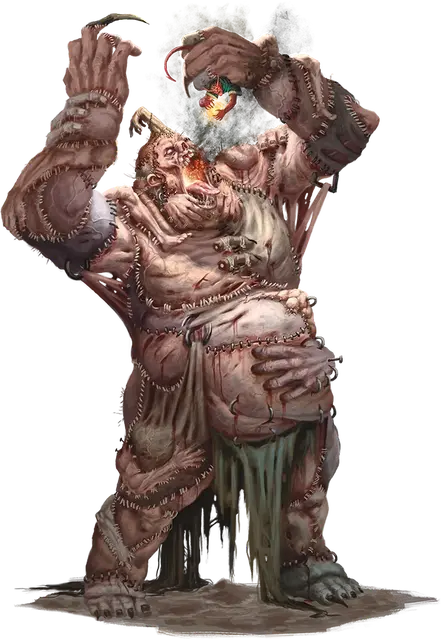

Мясной колосс
Flesh Colossus
Громадный Конструкт, без мировоззрения

Класс Доспеха 14 (природный доспех)
Хиты 280 (16к20 + 112)
Скорость 60 футов
| мод | спас | ||
|---|---|---|---|
| СИЛ | 24 | +7 | +7 |
| ЛОВ | 9 | −1 | −1 |
| ТЕЛ | 24 | +7 | +7 |
| мод | спас | ||
|---|---|---|---|
| ИНТ | 6 | −2 | −2 |
| МДР | 10 | +0 | +0 |
| ХАР | 5 | −3 | −3 |
Иммунитет к урону психическая энергия, электричество, яд; дробящий, колющий, рубящий от немагических атак
Иммунитет к состояниям испуг, истощение, окаменение, отравление, очарование, паралич
Чувства тёмное зрение 120 футов, пассивное Восприятие 10
Языки понимает Великаний, но не говорит
Опасность 20 (25000 опыта)
Бонус мастерства +6
Особенности
Берсерк. Если ядро внутри колосса разрушено, он становится берсерком. Будучи берсерком, он в каждом своем ходу атакует ближайшее видимое существо. Если поблизости нет существ, к которым можно подойти и атаковать, колосс атакует объект. Став берсерком, колосс остается им, пока его не уничтожат.
Неизменяемая форма. Колосс обладает иммунитетом ко всем заклинаниям и эффектам, изменяющим его форму.
Сопротивление магии. Колосс совершает с преимуществом спасброски от заклинаний и прочих магических эффектов.
Осадное чудовище. Колосс наносит двойной урон объектам и сооружениям.
Действия
Мультиатака. Колосс совершает две атаки Кулаком.
Кулак. . Рукопашная атака оружием: +13 к попаданию (с преимуществом, если колосс в бешенстве), досягаемость 20 футов, одна цель. Попадание: 17 (3к6 + 7) дробящего урона. Если целью является существо Большого размера или меньше, оно перемещается на 15 футов к колоссу и становится схваченным (Сл высвобождения 17), пока оно схвачено, оно так же опутано. Колосс может одновременно держать схваченными до двух существ.
Элементальное дыхание (перезарядка 5-6). Колосс выдыхает облако в виде 90-футового конуса, наполненного элементальной энергией. Каждое существо в этой области должно совершить спасбросок Ловкости Сл 21. В случае провала существо получает 40 (9к8) урона, тип которого выбирается колоссом: кислота, холод, огонь или электричество. В случае успеха существо получает половину этого урона.
В то же самое время, когда колосс выдыхает это облако, существа внутри колосса получают 40 (9к8) урон силовым полем от бурления элементальной энергии.
Бонусные действия
Укус. . Рукопашная атака оружием: +13 к попадание, досягаемость 5 футов, одно существо Большого или меньшего размера, схваченное колоссом. Попадание: 20 (3к8 +7) дробящего урона и существо проглатывается. Проглоченное существо опутано, получает полное укрытие от атак и прочих эффектов вне колосса, а также получает 10 (3к6) урона силовым полем в начале каждого хода колосса.
Грудная клетка колосса может содержать в себе до двух существ одновременно. Внутри его грудной клетки находится его ядро, представляющее собой Большой объект с КД 16, которое обладает иммунитетом к урону психической энергией, электричеством и ядом. Оно имеет 140 хитов и излучает тусклый свет в радиусе 10 футов. Если ядро разрушено, колосс изрыгает всех проглоченных существ, каждое из которых падает ничком в 10 футах от колосса, а колосс больше не может проглотывать существ. Если колосс умирает, любое проглоченное существо перестаёт быть опутанным и может выбраться из трупа, потратив 10 футов перемещения, падая при выходе ничком.
Описание
На заре империи великанов извращенные умы стремились заставить своих павших товарищей продолжить службу. Великаны-волшебники сшивали и переплетали плоть различных великанов поверх адамантинового скелета, создавая ужасающего колоссального конструкта. Внутри груди мясного колосса находится каменная сфера, наполненная духами с каждого элементального плана, выступающая в качестве его ядра.
По сей день некоторые из этих древних мясных колоссов охраняют заброшенные руины, места, священные для великанов, и утраченные сокровища — и, возможно, секрет создания новых, подобных себе, образцов.